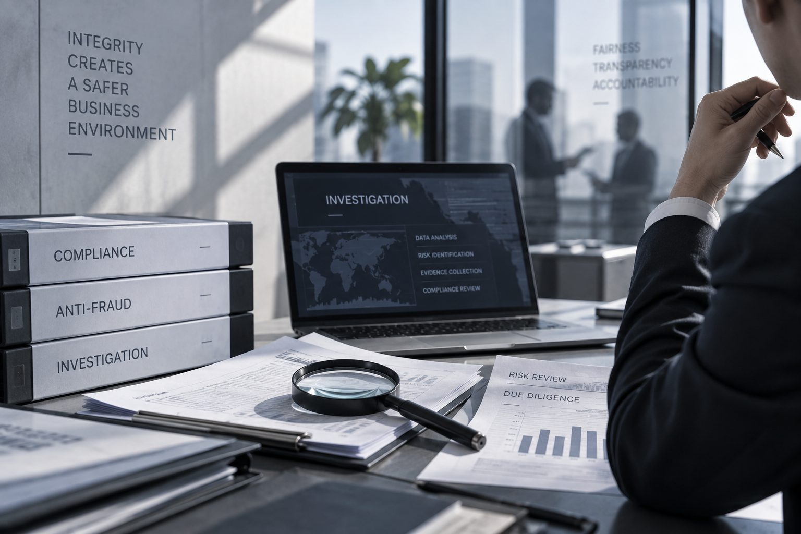

投资决策的质量，很大程度上取决于对管理层的了解程度——而这恰恰是传统商业、财务、法律尽调较难触及的部分。我们从个人与公司双维度评估目标企业与核心管理层，帮助投资机构在决策前识别个人、治理与经营三类风险。The quality of an investment decision often comes down to how well you understand the people behind it — a dimension that conventional commercial, financial and legal due diligence rarely reaches. We assess target companies and key individuals across personal, governance and operating risk, before the decision is made.
我们的调查框架围绕三类风险展开，覆盖个人、公司治理与经营三个层面。Our framework organizes findings into three categories spanning the individual, governance and operating layers.
行为能力、道德、性格及其他风险（健康、处罚、诉讼等）conduct/ability, integrity, character, and other factors (health, penalties, litigation)
组织架构、内部管控、合规、人力资源organizational structure, internal controls, compliance, HR
财务、法律、业绩、业务financial, legal, performance, business
调研渠道包括媒体检索、数据库查询、在职/离职员工访谈、上下游伙伴访谈、竞争对手访谈、行业协会与监管机构访谈。Sources include media searches, database queries, current/former employee interviews, upstream/downstream partner interviews, competitor interviews, and interviews with industry associations and regulators.
我们将成熟的管理与领导力评估模型应用于个人尽调，包括领导力五力模型（感召力、前瞻力、影响力、决断力、控制力）、领导力胜任模型（前瞻/执行/凝聚/影响四大维度）以及领导性格理论（十项品德+十项才能评估）；在公司层面，采用麦肯锡7S模型分析公司整体发展现状。We apply established leadership and management frameworks to individual assessment — including a five-force leadership model, a leadership competency model, and character theory covering ten virtues and ten capabilities. At the company level, we use the McKinsey 7S framework to assess overall organizational health.
覆盖150+国家及地区，累计完成200+跨境案例，可核实身份、教育背景、工作经历、房产、股权、财务、诉讼、犯罪记录及国际制裁信息等，网络覆盖美国、加拿大、英国、德国、法国、意大利、俄罗斯、新西兰、澳大利亚、新加坡、马来西亚、越南、印度、香港、南非、墨西哥等主要国家及地区。With a network spanning 150+ countries and regions and 200+ cross-border cases behind us, we verify identity, education, employment history, property, equity, finances, litigation, criminal records and international sanctions — across major markets including the US, Canada, the UK, Germany, France, Italy, Russia, New Zealand, Australia, Singapore, Malaysia, Vietnam, India, Hong Kong, South Africa and Mexico.
10年+调研执行经验10+ years of execution experience
1000+件大中华及海外调研案件1,000+ cases in Greater China & overseas
每份报告经2位经理+1位总监以上校核Reviewed by 2 managers + 1 director
500+调研执行成员覆盖全国20+城市500+ field staff across 20+ cities
无论涉及供应商背调、合规调查，还是投资尽职调查与市场研究，欢迎与我们联系。我们通常会在了解具体背景后，再建议合适的调查方案。Whether the matter involves a supplier check, a compliance investigation, or investment due diligence, we typically propose an approach only once we understand the specifics.

扫码添加，快速沟通Scan to connect instantly